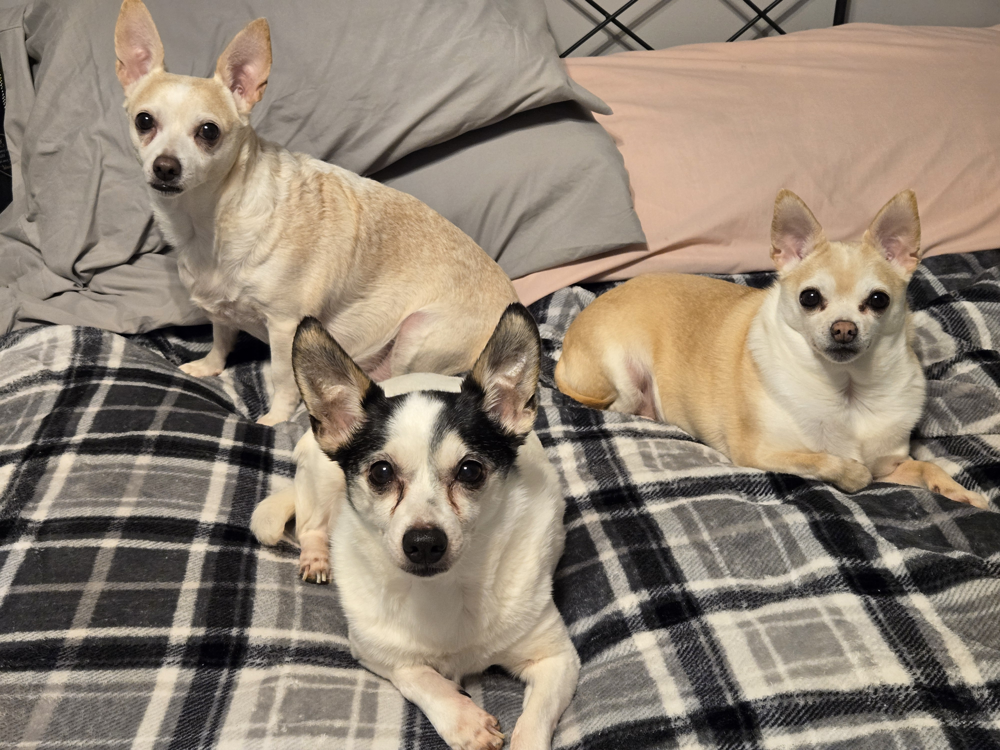
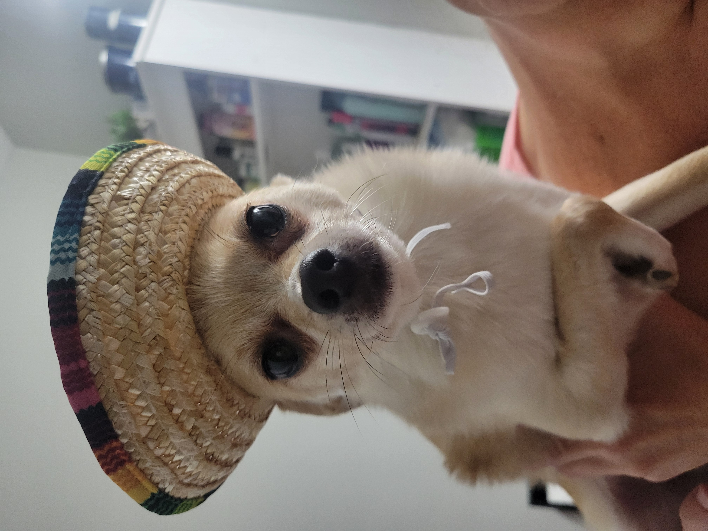

Hi! This is a page all about me
My name is Maria, but I prefer to be called Mia.
I have a Bachelor's degree in Science. My degree is in Computer Science.
I was born in Baltimore, Maryland in 1987 and moved to Pennsylvania when I was 9.
I am brand new to the tech world, but I am eager to learn as much as I can.
My strengths are:
- I am able to prioritize tasks and meet deadlines effectively
- I work great with others by utilizing excellent communication and collaboration abilities
- I am a critical thinker & I love problem solving
- I fully embrace new technology. I have the ability to adapt to changing technologies and learn new skills
Fun fact: I have 4 dogs! Their names are Scarlett (right), Aspen (middle) Sophia (back)

And this little cutie below is Ranger
